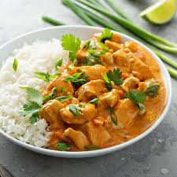

Poulet au curry
Home

Description :
Un curry est un plat ayant son origine dans la gastronomie du sous-continent indien. Il se caractérise par une combinaison complexe d’épices et d’herbes comprenant en général des piments frais ou séchés. L’usage du terme « curry » pour désigner un plat est en général limité aux plats préparés dans une sauce. Cette utilisation du mot « curry » constitue une métonymie du mélange d’épices nommé « curry » même si le plat ainsi nommé ne contient pas forcément ce mélange.
Ingrédients :
- Poulet
- Oignons
- Curry
- Cumin
- Lait de coco
- Piment
- Poivre
- Sel
Étapes
- Mettre une grande poêle à chauffer. Couper les oignons en petits morceaux, et les faire cuire à feu assez fort.
- Remuer, en ajoutant du curry et du cumin.
- Couper les blancs de poulet en morceaux, les ajouter dans la poêle et remettre des épices; tourner.
- Baisser le feu, et ajouter 2 cuillères à soupe de crème.
- Après 5 min de cuisson, remettre 2 cuillères à soupe de crème et des épices (si nécessaire).
- Si le plat est fait à l'avance, remettre un peu de crème au moment de réchauffer car la sauce s'évapore.
- Bon appétit